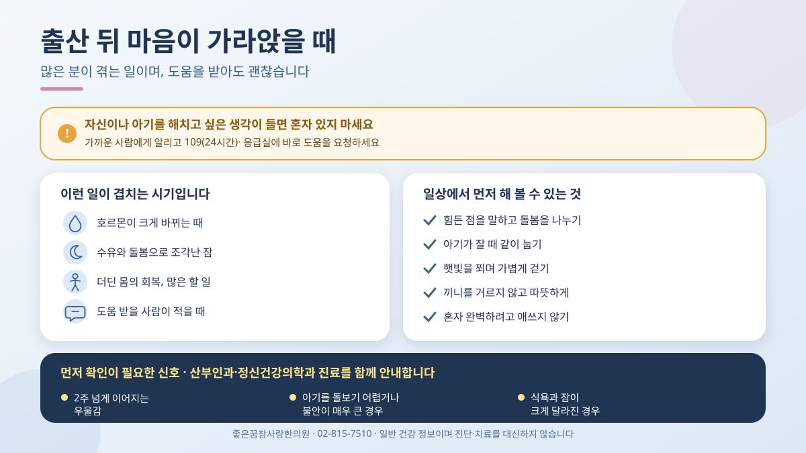
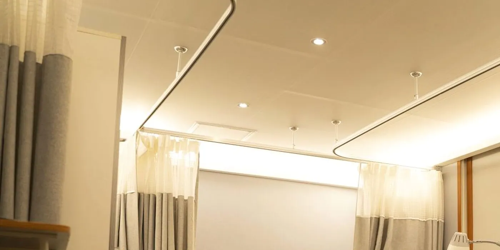

출산 뒤 마음이 가라앉고 눈물이 나는 것은 흔한 반응일 수 있으며 잠과 도움 받을 사람, 아기 돌봄의 부담을 함께 묻고 2주 넘게 이어지거나 아기를 돌보기 어렵거나 극단적인 생각이 들면 즉시 산부인과와 정신건강의학과 진료를 권합니다.
여쭙는 것
- 마음이 가라앉은 것이 언제부터이고 얼마나 이어졌나요?
- 잠은 하루 몇 시간 자고, 아기가 자도 잠들지 못하나요?
- 도움을 받을 사람이 있나요?
생활에서 해 볼 것
- 가족이나 친구에게 힘든 점을 이야기하고 돌봄을 나누기
- 아기가 잘 때 같이 눕기
- 햇빛을 쬐며 가볍게 걷기
한의원에서 함께 살필 것
- 출산 뒤 잠이 얕고 몸이 늘 지쳐 있는 경우 잠과 기력, 몸의 온기를 함께 살핍니다.
- 수유와 돌봄으로 손목·허리가 아프고 몸이 무거운 경우 통증과 회복을 함께 살핍니다.
- 식욕이 없고 소화가 잘 안 되는 경우 식사와 소화를 함께 살핍니다.
먼저 확인이 필요한 신호
- 2주 넘게 우울감이 이어지는 경우
- 아기를 돌보기 어렵거나 불안과 걱정이 매우 큰 경우
- 식욕과 잠이 크게 달라진 경우

아기가 태어났는데 마음이 가라앉고 이유 없이 눈물이 나는 것은 이상한 일이 아닙니다. 출산 뒤 몸과 생활이 한꺼번에 바뀌는 시기라 많은 분이 겪으며, 도움을 받아도 괜찮습니다. 다만 자신이나 아기를 해치고 싶은 생각이 들면 혼자 있지 말고 바로 109나 119, 응급실에 도움을 요청하세요.
왜 이런 불편이 생길 수 있나요
- 출산 뒤 호르몬이 크게 바뀌면서 감정이 흔들리기 쉬운 시기가 옵니다.
- 밤낮없는 수유와 돌봄으로 잠이 조각나면 마음도 쉽게 지칩니다.
- 출산 뒤 몸의 회복이 더딘데 해야 할 일은 많아 부담이 쌓입니다.
- 도움을 받을 사람이 적거나 혼자 완벽하게 해내려 할수록 더 힘들어질 수 있습니다.

먼저 이렇게 여쭙니다
- 마음이 가라앉은 것이 언제부터이고 얼마나 이어졌나요?
- 잠은 하루 몇 시간 자고, 아기가 자도 잠들지 못하나요?
- 도움을 받을 사람이 있나요?
- 식욕과 의욕, 아기에 대한 마음은 어떤가요?
일상에서 먼저 해 볼 수 있는 것
- 가족이나 친구에게 힘든 점을 이야기하고 돌봄을 나누기
- 아기가 잘 때 같이 눕기
- 햇빛을 쬐며 가볍게 걷기
- 끼니를 거르지 않고 따뜻한 식사 챙기기
- 혼자 완벽하려고 애쓰지 않기

한의원에서 함께 살필 수 있는 경우
- 출산 뒤 잠이 얕고 몸이 늘 지쳐 있는 경우 잠과 기력, 몸의 온기를 함께 살핍니다.
- 수유와 돌봄으로 손목·허리가 아프고 몸이 무거운 경우 통증과 회복을 함께 살핍니다.
- 식욕이 없고 소화가 잘 안 되는 경우 식사와 소화를 함께 살핍니다.
좋은꿈참사랑한의원에서는 출산 뒤의 몸과 마음 이야기를 먼저 충분히 듣고, 진맥을 기본으로 하고 필요하다고 판단될 때 설진·복진을 더해 몸 상태를 살핍니다. 수유 중인지 먼저 확인한 뒤 침·한약 상담 등을 신중하게 정하며, 우울감이 깊거나 오래가면 산부인과나 정신건강의학과 진료를 함께 안내합니다.
예를 들어 이런 경우가 있습니다
- 예를 들어 출산 뒤 2주 안쪽에 이유 없이 눈물이 나다가 잠을 조금씩 이어 자면서 차츰 가라앉는 경우가 있습니다. 이런 흐름은 출산 뒤 흔히 지나가는 감정 변화일 수 있어, 잠과 식사를 챙기며 며칠 단위로 지켜보셔도 좋습니다.
- 예를 들어 출산 뒤 한 달이 지났는데도 아기가 자는 시간에 잠들지 못하고, 아무것도 즐겁지 않은 날이 대부분인 경우에는 단순한 피로로만 넘기지 말고 산부인과나 정신건강의학과 상담을 먼저 받아 보시길 권합니다.
- 예를 들어 친정과 멀리 떨어져 혼자 아기를 돌보며 끼니를 서서 때우는 날이 이어지는 경우, 마음보다 먼저 몸이 지쳐 있을 수 있어 돌봄을 나눌 사람과 식사 시간을 함께 정리해 보는 것이 첫걸음이 될 수 있습니다.
자주 하는 오해
- "엄마라면 다 견디는 일"이라는 생각에 참기만 하는 분이 많지만, 출산 뒤 마음이 힘든 것은 의지가 약해서가 아니며 도움을 받는 것도 돌봄의 한 방법입니다.
- 수유 중이라 아무 진료도 받을 수 없다고 여기기 쉽지만, 수유 여부를 먼저 알려 주시면 상담과 치료 방법을 그에 맞춰 신중하게 정할 수 있습니다.
- 잠은 아기가 크면 저절로 돌아온다고 미루기 쉽지만, 하루 한 번이라도 이어서 잘 수 있는 시간을 가족과 함께 만들어 보는 것이 마음을 돌보는 데 도움이 될 수 있습니다.
스스로 점검해 보세요
- 출산 뒤 마음이 가라앉은 날이 2주 넘게 대부분 이어지고 있다
- 아기가 자는 동안에도 잠들지 못하거나 자주 깬다
- 끼니를 거르거나 입맛이 크게 달라졌다
- 예전에 좋아하던 일에 관심이 거의 없어졌다
- 내가 엄마로서 부족하다는 생각이 자주 든다
- 아기를 돌보는 일이 버겁고 두렵게 느껴진다
- 힘든 마음을 이야기할 사람이 주변에 없다
두세 가지 이상 해당하거나 날이 갈수록 무거워진다면 혼자 견디지 말고 진료를 받아 보시길 권합니다.

얼마나 지켜보고 언제 상담할까요
- 출산 뒤 며칠에서 2주 안쪽에 감정이 오르내리다 점차 가라앉는다면 잠과 식사를 챙기며 지켜보셔도 좋습니다.
- 2주가 지나도 우울감이 대부분의 날 이어지거나 점점 깊어진다면 산부인과나 정신건강의학과 상담을 받아 보세요.
- 잠을 거의 못 자는 날이 사흘 넘게 이어지거나 아기를 돌보기 어려울 만큼 지친다면 기다리지 말고 진료를 받아 보세요.
- 자신이나 아기를 해치고 싶은 생각이 든다면 그날 바로 109나 119, 응급실에 도움을 요청하세요.
처음 오시면 이런 순서로 진료합니다
첫 방문에서는 출산일과 출산 방법, 수유 여부, 하루 잠과 식사 이야기를 먼저 듣습니다. 이어서 모든 분께 그렇듯 맥부터 짚고(진맥), 필요하다고 판단될 때 설진·복진과 통증 부위 진찰을 더합니다. 그 뒤 잠을 이어 잘 수 있는 방법과 식사 시간처럼 생활에서 먼저 조정할 것의 순서를 함께 정하고, 침이나 한약 상담은 수유 여부를 확인한 뒤 신중하게 정합니다. 다음 진료에서는 지난번 정한 것을 어떻게 지내셨는지 이어서 여쭙습니다. 진료 시간은 방문 전 전화(02-815-7510)로 확인해 주세요.

이렇게 기록해 오시면 상담이 쉬워집니다
- 출산일과 수유 여부
- 하루 잠든 시간을 모아 적은 수면 기록
- 마음이 가장 힘든 시간대
- 복용 중인 약과 영양제
이런 증상은 먼저 확인이 필요합니다
- 2주 넘게 우울감이 이어지는 경우
- 아기를 돌보기 어렵거나 불안과 걱정이 매우 큰 경우
- 식욕과 잠이 크게 달라진 경우
- 극단적인 생각이나 자신 또는 아기를 해치고 싶은 생각이 드는 경우
이런 생각이 들면 혼자 있지 말고 가까운 사람에게 알린 뒤 정신건강 위기상담 전화 109(24시간)나 119, 응급실에 바로 도움을 요청하세요. 복용 중인 약은 처방한 의사와 상의 없이 줄이거나 끊지 않습니다.

관련 글
- 출산 뒤 아기를 안다가 손목과 손가락이 아플 때는 어떻게 하나요?
- 잠이 잘 오지 않을 때 한의원에서는 무엇을 먼저 살피나요?
- 한의원에서 손목 맥을 짚는 진맥은 무엇인가요?
한눈에 보는 표
| 구분 | 핵심 |
|---|---|
| 여쭙는 것 | 마음이 가라앉은 것이 언제부터이고 얼마나 이어졌나요? 잠은 하루 몇 시간 자고, 아기가 자도 잠들지 못하나요? |
| 생활에서 해 볼 것 | 가족이나 친구에게 힘든 점을 이야기하고 돌봄을 나누기 아기가 잘 때 같이 눕기 |
| 한의원에서 함께 살필 것 | 출산 뒤 잠이 얕고 몸이 늘 지쳐 있는 경우 잠과 기력, 몸의 온기를 함께 살핍니다. 수유와 돌봄으로 손목·허리가 아프고 몸이 무거운 경우 통증과 회복을 함께 살핍니다. |
| 먼저 확인이 필요한 신호 | 2주 넘게 우울감이 이어지는 경우 아기를 돌보기 어렵거나 불안과 걱정이 매우 큰 경우 |
자주 묻는 질문
산후 우울은 한의원에서도 보나요?
잠과 식사, 몸의 상태를 함께 살피고 우울감이 깊거나 오래가면 산부인과나 정신건강의학과 진료를 권합니다.
수유 중이에요.
수유 중이라는 점을 먼저 알려 주시면 치료 방법과 한약 여부를 더 신중하게 정합니다.
가족은 어떻게 도와주면 좋을까요?
밤 수유나 돌봄을 나눠 엄마가 이어서 잘 수 있는 시간을 만들고, 힘든 마음을 탓하지 않고 들어 주는 것이 큰 도움이 됩니다.
이 글은 일반적인 건강 정보이며 개인의 진단이나 치료를 대신하지 않습니다. 증상이 있거나 복용 중인 약이 있다면 진료를 통해 확인하세요. 치료 효과는 개인마다 다를 수 있습니다.
작성 기준: 일반적으로 알려져 있는 건강 정보를 참고해 정리했습니다(대표원장 감수). 증상 기록은 1~2주 동안 하루 1회, 비슷한 시간에 적어 오시면 지난 상태와 비교하기 쉽습니다.
좋은꿈참사랑한의원은 재진 때 지난번 이야기부터 이어서 여쭙니다. 진료시간과 예약은 오시는 길에서 확인하세요.